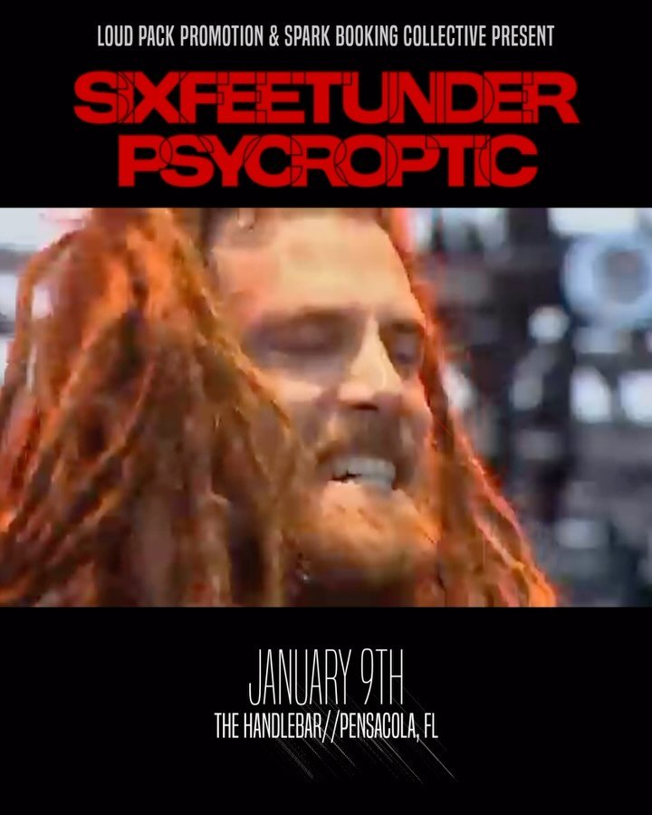

THU JAN 9from the archive
Six Feet Under, Psycroptic, Rotted Remains, Accursed Creator, Infernem
The Handlebar · 319 N Tarragona St, Pensacola, FL
Less than a month away! Death Metal legends Six Feet Under and Psycroptic with local support from Rotted Remains, Accursed Creator, and Infernem. January 9th at The Handlebar in Pensacola. Dont miss out!